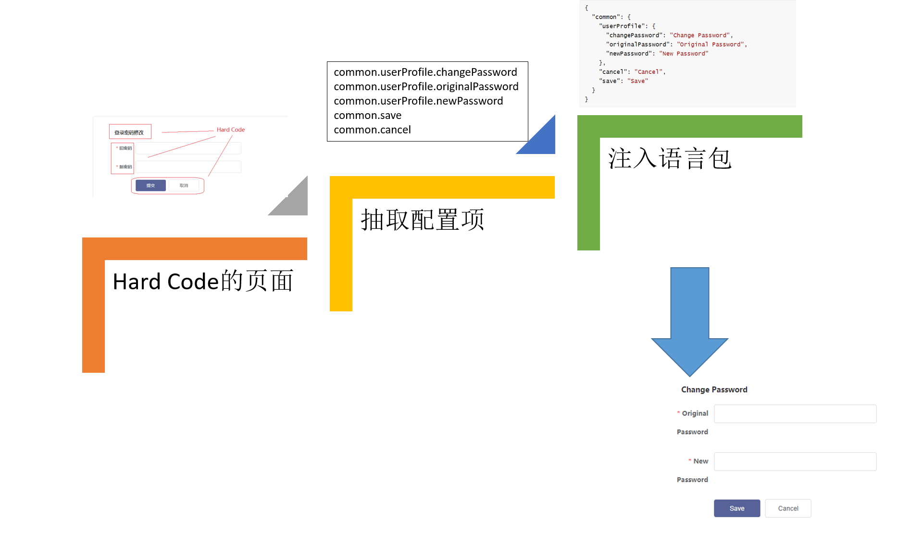
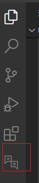
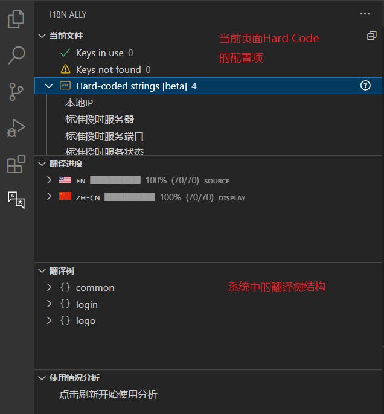

基于前端的多语言实施方案
随着公司产品的进一步成熟，按照走出园区走出街道的发展路线，走出国门是走向巅峰的必经之路，而打通国际化的第一步就是多语言版本的支持。目前产品的技术架构是vue+SpringBoot的前后端分离架构，我们选择了基于vue-i18n的前端实施方案。
方案概述
多语言的核心是将页面hard code的资源如label标签、表格title等元素抽象成语言配置项，通过监测用户的语言偏好注入合适的语言包，以满足多语言支持和切换的需求。
vue-i18n是一个基于vue.js的国际化组件，通过提供一组简单的API封装提供了基于vue的国际化解决方案。
从宏观层面，vue-i18n的应用步骤可以概括如下：
1 | |
从微观实施角度出发，项目的应用步骤为：
1 | |
下面我们基于微观角度来看看具体到项目实施，如何实现多语言。
项目实施
框架搭建
框架搭建可以基于官网的startup，当然这个startup为了考虑通用性，应用到具体项目的时候还需要进行一些适当的扩展和裁剪。
首先需要安装vue-i18n插件，安装的时候需要区分项目的vue版本，如果是vue2则使用vue-i18n@8，否则使用vue-i18n@9。
然后我们在项目目录src/common 下创建了lang/locale的目录结构，主要包含了三个文件：
lang/i18n.js
通过i18n.js，构造一个包含语言包的Vuei18n对象。
1
2
3
4
5
6
7
8
9
10
11
12
13
14
15
16
17
18
19
20
21import Vue from 'vue'
import VueI18n from 'vue-i18n'
import enLocale from './locale/en'
import cnLocal from './locale/zh-CN'
Vue.use(VueI18n)
const messages = {
en: {
...enLocale
},
zh: {
...cnLocal
}
}
const i18n = new VueI18n({
locale: localStorage.getItem('lang') || 'en',
messages,
fallbackLocale: 'zh',
})
export default i18nlang/locale/en.json
英文语言包，json格式，大概的内容如下：
1
2
3
4
5
6
7
8
9
10
11{
"common": {
"userProfile": {
"changePassword": "Change Password",
"originalPassword": "Original Password",
"newPassword": "New Password"
},
"cancel": "Cancel",
"save": "Save"
}
}lang/locale/zh-CN.json
中文的语言包
最后将vue-i18n对象通过main.js注入到全局的vue对象中，我们基于vue-i18n的多语言前端框架就搭建完成了。
1 | |
识别配置项
在开始之前我们确定了配置项的三层配置结构：
{app}.{module}.{SID}
以上文出现过的 “common.userProfile.newPassword” 为例，应用是公共平台，模块是用户信息，唯一标识就是newPassword。
在识别配置项的时候我们可以引入vscode的多语言插件 - i18n Ally。通过i18n Ally可以快速的定位出页面的hard code编码，并通过Ally编辑器快速的编辑多语言信息。
安装好插件后，首先编辑项目目录下的.vscode/settings.json文件加入Ally的配置，
1 | |
重启VSCode后就可以看到左边出现了i18n Ally的图标，
选择待翻译文件，点击Ally图标就可以识别出文件中hard code的配置项了。
如图所示，当前页面有4个待翻译项，选择一个hard code string可以添加为配置项，也可以定位到具体位置，修改为已有配置项。更新完成后代码如下：
1 | |
翻译进度部分主要处理多语言不一致的情况，如果一个配置项加了英文没有加中文翻译，那么在中文的进度就会提示有缺失的文案或者空值，提醒用户有遗漏。这时候点击改配置项可以进入配置项的Ally编辑器，来编辑对应的中英文信息。
在翻译树部分展示的是系统现有的配置项，可以作为配置项定义的结构参考，也可以直接复制配置项路径应用到当前文件。
更新语言包
经过识别配置项，我们可以得到一个初始版本的配置项和系统中文翻译的对应关系。
为了方便管理维护和多方协作，我们定义了语言包管理的模板，格式如下：
| APP | Module | SID | en | zh-CN | 其他语言 |
|---|---|---|---|---|---|
| common | cancel | Cancel | 取消 | ||
| common | userProfile | newPassword | New Password | 新密码 |
前面三列组成了唯一的配置项ID，后面一列对应一种语言，所以经过识别语言包我们的1-3列和zh-CN列已经填充完成，需要组织翻译人员完成en列的填写即可。
为了方便实际操作，我们还开发了一款语言包生成工具 ，支持Excel和json文件的互转。当Excel版本的语言包更新完成后可以自动根据语言列生成对应的json文件，部署到环境即可完成语言包的实时更新。
语言包的更新是一个迭代的过程，通过测试发现问题后需要重新识别配置项并更新语言包。
页面样式调整
在完成多语言的更新后，由于语言描述的长度差异会对页面展示造成冲击，如图所示一个很简单的例子：

原密码和新密码在中文模式下是一行，换成英文后变成了两行，这时候就需要调整页面label的宽度来适配中英文了。
页面样式调整主要通过全页面的测试来覆盖，也可以理解为一个迭代的过程。
方案回顾
在上述多语言方案和具体实施过程中，我们首先基于现有系统技术架构明确方案是基于前端的多语言实施方案，采用了vue生态中比较常用的vue-i18n作为主要实现基座。在识别配置项的过程中我们引入了i18n-Ally插件协助我们快速发现待配置项，识别出配置项后考虑语言包管理的便捷性，我们采用统一的Excel模板管理语言包，并通过自研工具完成json语言包和Excel语言包的转换。在实施过程中运用迭代更新的策略，逐步完善语言包和系统样式，最终实现了系统的多语言支持。
附录
附录部分主要记录一些语言替换过程中遇到的坑。
目前有部分配置项内容是写在数据库中的，如app name，menu name等。
将数据库更新为唯一的配置项ID，而不是hard code，页面上通过配置项解析实现多语言支持。
1
2<div class="app-name">
{{ $t(app.appName) }}</div>placeholder，title这些html属性需要改成动态赋值
1
:placeholder="$t('login.password_placeholder')"后端直接返回的错误信息。
后端定义错误返回信息的时候需要定义成{app}.{“err”}.{errId}的格式在前端进行解析。
通用字符串的配置，采用插值
例如有的label需要配置冒号，这时候可以定义成：
common.label.region= Region{post}在使用的时候将post传值进去：
this.$t('common.label.region',{post:':'})解析出来就是 “Region :”
复数的配置,采用预定义函数tc
如查询页面的时间范围可能为1小时，2小时…12小时，这时候可以使用tc函数
配置的时候配置成：
common.search.hour = {num}hour | {num}hours使用的时候：
this.$tc('common.search.hour',10,{num:'10'})这时候解析出来就是 10小时，对应的英文是 10 hours
嵌套多语言的运用
如页面的非空校验，一般的提示是“请输入xxx”，这时候我们可以使用嵌套多语言减少资源的定义。
data.collect.selectWarning = Please choose {field}使用的时候：
1
2
3this.$t('data.collect.selectWarning', {
field: this.$t('data.searchField.region')
})这样解析出来就是 “Please choose region”
ElementUI的国际化
首先需要在i18n.js中引入element-ui的语言包，
1
2
3
4
5
6
7
8
9
10
11
12
13import eleEnLocale from 'element-ui/lib/locale/lang/en'
import eleZhLocale from 'element-ui/lib/locale/lang/zh-CN'
...
const messages = {
en: {
...enLocale,
...eleEnLocale
},
zh: {
...cnLocal,
...eleZhLocale
}
}然后在main,js中注入ElementUI的时候传入i18n属性
1
2
3Vue.use(ElementUI, {
i18n: (key, value) => i18n.t(key, value)
})Echarts的国际化
Echarts中的Tooltip在使用format函数的时候，函数作用域无法获取i18n的$t方法，这时候需要在图表创建方法时将i18n方法代理到当前作用域中：
let that = this然后在format函数中使用 that.$t 即可
子组件中的props的默认值
将props中的默认值，通过computed进行封装，使用的时候使用computed的值
嵌套组件中赋值不能加this
如图所示的使用方式，在img中无法通过this来获取i18n对象，这时候把this去掉即可。
1
2
3
4
5
6
7<el-table-column :label="this.$t('common.operation')" min-width="4%">
<template #default="{ row }">
<el-button>
<img :title="$t('core.configure.collectItem')"/>
</el-button>
</template>
</el-table-column>